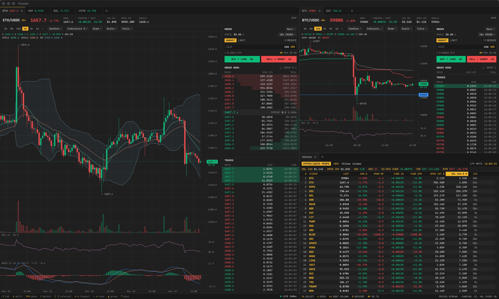
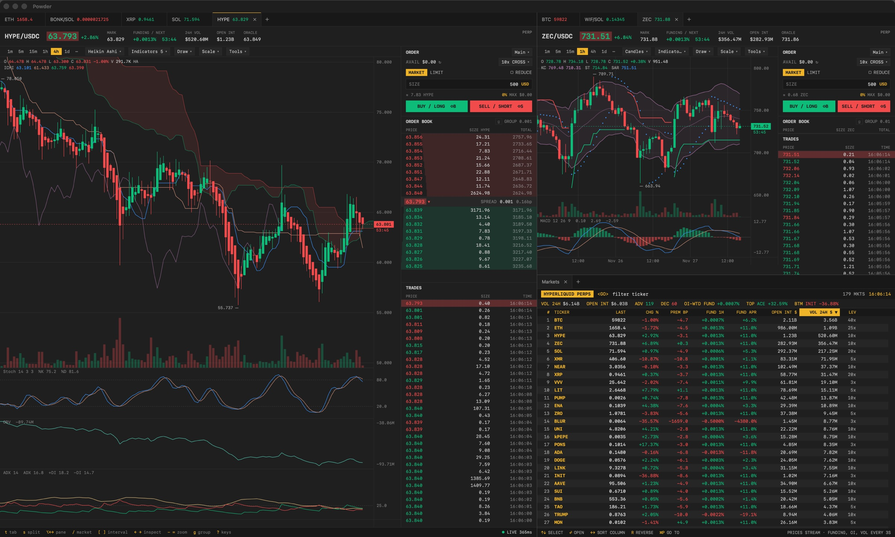
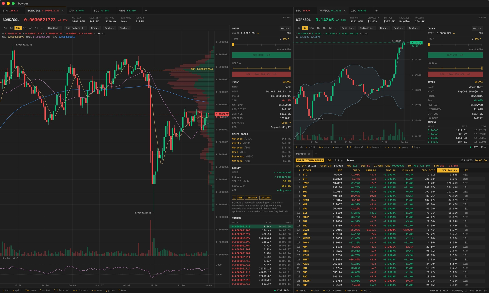
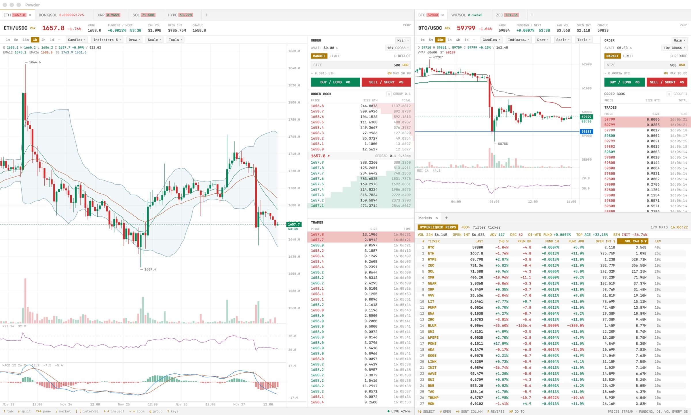

Powder
A native trading terminal for Hyperliquid and Solana.
No browser between you and the chain. One Mac app that draws its first chart before a web terminal has finished downloading, signs an order in under a tenth of a millisecond, and takes nothing from your trades. Every figure on this page was measured.
Download for Apple silicon Download for Intel Source on GitHub

Screens
One window, the whole desk
Every pane is live. Split them, stack tabs in each, and the layout stays as you left it.







Benchmarks
Against the web terminals
Same Mac, same connection, each web product showing one market. Powder is showing two, each with its chart, order book and trade tape. Shorter bars are better.
Order path
Where the milliseconds go
From keypress to confirmed, out of Powder's own order log. Powder's part is too small to draw to scale; the rest is the network and the chain, which every interface pays.
Hyperliquid: median of eight market orders. Solana: send and landing times of a swap sent through a public RPC; Powder also sends through Nozomi, which hands the transaction to the block leader. The route is priced before the key is pressed: while a ticket is in use, Powder keeps the swap its buttons would send priced and built, so the order itself is only signing and sending. Signing times are medians of 2,000 runs in a release build.
| Powder | Web terminals | |
|---|---|---|
| Signing | Native code, 0.08 ms. No popup, no extension. | The page's JavaScript, a wallet extension popup, or a key the platform holds for you. |
| Where the key lives | macOS Keychain. | Browser storage, an extension, or the platform. |
| Path to the chain | Straight to Hyperliquid's API, or to Nozomi for Solana. | Usually through the site's own servers first. |
| When you see it | At the keypress, on both. Corrected when it lands, undone if it fails. | Varies by site. |
| Time to land | Measured above. | Not published, and not measurable without trading on each. |
Cost
$0 commission
Powder adds no fee of its own to any trade: no builder fee on Hyperliquid, no platform fee on Solana swaps. Move the slider to see what the same volume costs in platform commission elsewhere.
Solana tokens
Hyperliquid perps
Platform commission only, at each platform's standard published rate; tiers, referrals and cashback can lower it. Exchange and network costs are paid on any interface and are not included: Hyperliquid's own trading fee, Solana network fees, and landing tips (Powder's default Nozomi tip is 0.001 SOL per swap). Rates as reported in November 2026 by CoinGecko (Hyperliquid builder fees) and public comparisons (Solana terminals); sources differ on some, so check each platform's own page.
Spec sheet
What it does
- Markets
- Every Hyperliquid perp. Any Solana token, routed by Jupiter, landed by Nozomi.
- Wallets
- One private key gives a Hyperliquid and a Solana address. Keys never leave the macOS Keychain.
- Orders
- Market and limit, ⇧B ⇧S from anywhere, right-click the chart for a limit at that price. Stop loss and take profit on Solana holdings.
- Charts
- Six types, 14 intervals, MA, EMA, Bollinger, VWAP, RSI, MACD, drawings. Entry, liquidation, resting orders and alerts drawn where they sit.
- Workspace
- Split panes and tabs, driven from the keyboard. ⌘P finds any market on either chain, ranked by volume.
- Tabs
- Positions, history, watchlist, alerts, liquidations, and web pages next to your charts.
- Token checks
- Mint and freeze authority, holder concentration, liquidity and age on every Solana token.
- Assistant
- ⌘K asks Claude or Codex to arrange the workspace and read data. It has no tool that can place an order.
- Builds
- Apple silicon and Intel, signed with a Developer ID and notarized by Apple.
Install
Download
Signed with a Developer ID and notarized by Apple. Unzip, move Powder to Applications, open it. macOS 14 or later.
Version 0.1.0, built and signed by GitHub Actions. SHA-256 checksums. Not sure which Mac you have? Apple menu → About This Mac: "Chip" means Apple silicon, "Processor" means Intel.